In diesem Lehrpfad werden Beispiele vorgestellt, wie der Mensch in Ökosysteme eingreift und diese verändert. Meist bringen diese Veränderungen negative Auswirkungen mit sich. Allerdings gibt es auch Beispiele, wie unsere Wiesen (siehe Station 2), bei denen die menschlichen Eingriffe auch positive Effekte mit sich bringen können. Daher ist es wichtig, bei solch komplexen Entwicklungen, verschiedene Perspektiven zu betrachten.
Häufig hört man hier in diesem Zusammenhang von Konzepten wie "Nachhaltiger Entwicklung" i, SDGs i, "Planetary Boundaries" i, "Earth Overshoot Day" i oder dem "Ökologischem Handabdruck" i. Doch was steckt eigentlich hinter diesen Begriffen?
Aufgabe: Schau dir die SDGs an. Um mehr über die einzelnen Ziele zu erfahren, kannst du sie jeweils anklicken. Welche Ziele hängen direkt mit dem Schutz und der Erhaltung von Ökosystemen zusammen? Wähle alle passenden Ziele aus und klicke anschließend auf Antwort prüfen.
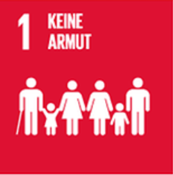
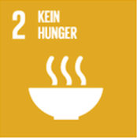
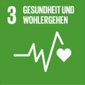
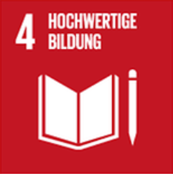
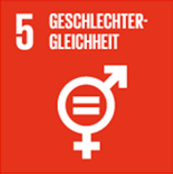
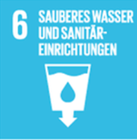
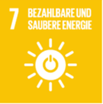
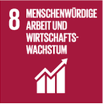
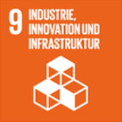
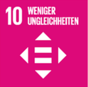
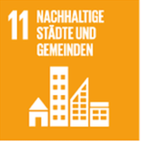
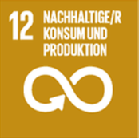
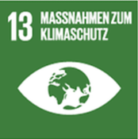
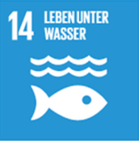
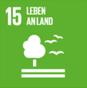
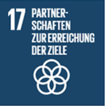
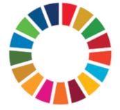
Lösung: Direkt mit dem Schutz von Ökosystemen verbunden sind vor allem:
SDG 6, 13, 14 und 15.
Sie betreffen Wasser-Ökosysteme, Klima als Rahmenbedingung, Meeres-Ökosysteme und Land-Ökosysteme
(Wälder, Böden, Biodiversität).
Wichtig ist es jedoch nicht zu vergessen, dass wir uns hier zwar nur auf die Ökologischen Ziele beschränkt
haben, die anderen SDGs aber auch alle extrem wichtig sind. Soziale
i und Ökonomische
i Aspekte der Nachhaltigen Entwicklung sollten nicht vergessen werden!
Bei den Planetary Boundaries (Planetare Belastbarkeitsgrenzen)
i handelt es sich nicht um
Ziele,
die wir erreichen wollen,
sondern Grenzen,
die nicht überschritten werden sollten.
Erstellt wurden diese durch das schwedische "Stockholm Resilience Centre".
Wird die Erde durch Eingriffe des Menschen negativ belastet, kann sie sich bis zu einem gewissen Grad wieder
regenerieren. Das wäre der sichere Handlungsbereich.
Diese Grenzen beschreiben, ab wann die Belastungen zu groß sind und eine solche Erholung nicht mehr möglich
ist. Die menschlichen
Auswirkungen
auf die Bereiche sind dann unumkehrbar.
Bei der Studie zu den Planetaren Grenzen wurden neun verschiedene Prozesse analysiert, z.B. Klimawandel oder
die Ozeanversauerung und wie bei einer Torte
mit mehreren Stücken dargestellt.
Aufgabe: Schau dir die Grafik zu den Planetary Boundaries
i an.
In welchem Belastungsbereich liegt die Veränderung der Biosphärenintegrität
(mit den Unterpunkten Funktionale Integrität und Genetische Vielfalt)?
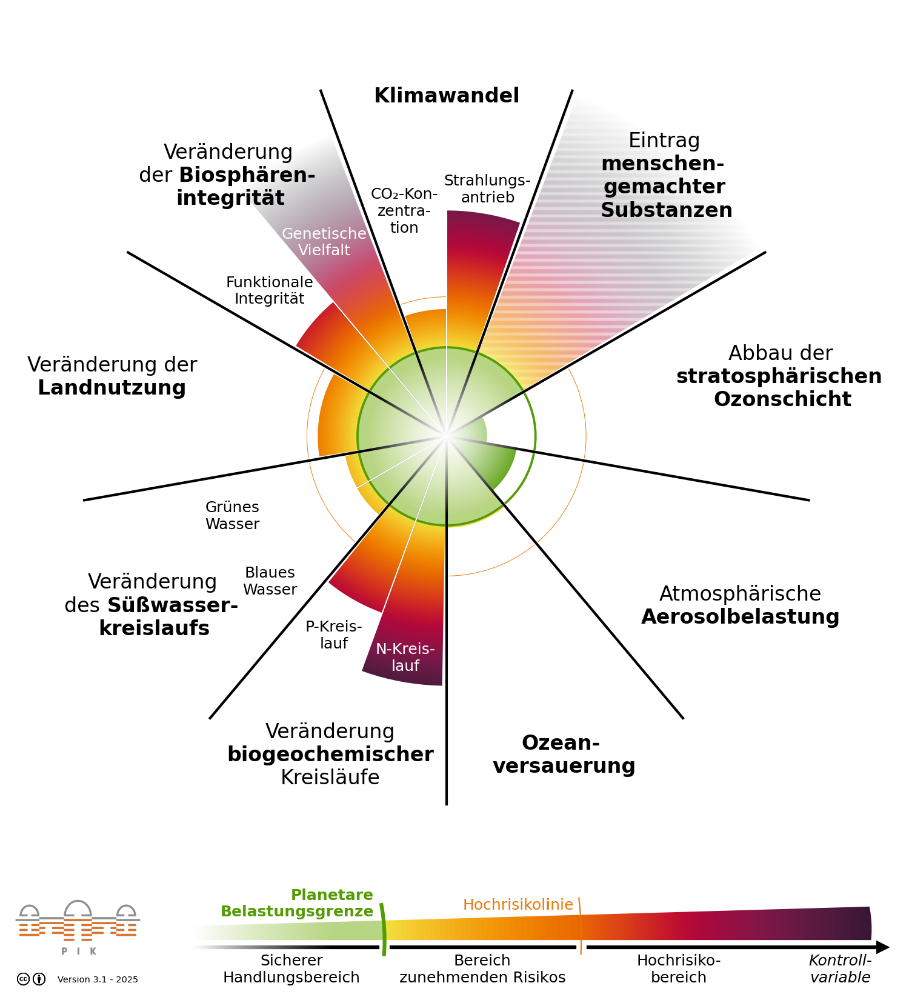
Aktuell gelten sieben der neun Grenzen als bereits überschritten. Wenn du mehr darüber erfahren willst, wie diese Grenzen berechnet wurden und warum sie so wichtig sind, kannst du hier klicken, um zur Seite des Bundesumweltministeriums zu kommen.
Der Earth Overshoot Day
i, auch Erdüberlastungstag oder Welterschöpfungstag genannt, definiert
den Tag, an dem
weltweit alle nachwachsenden Ressourcen, die die Ökosysteme unserer Erde innerhalb eines Jahres herstellen
können,
aufgebraucht sind. (Definition nach der Deutschen Welthungerhilfe e. V.)
Liegt dieser Tag vor dem 31.12. eines Jahres, so verbraucht die Menschheit in diesem Jahr mehr Ressourcen,
als die Erde in einem Jahr nachproduzieren kann.
Leider findet der Earth-Overshoot Day jedes Jahr früher
statt.
Aufgabe: Wähle im Kalender aus, an welchem Tag du glaubst, dass der globale Earth Overshoot Day 2025 i war, und klicke anschließend auf Antwort prüfen.
Um dich weiter darüber zu informieren kannst du folgende Webseiten nutzen:
Doch was bedeutet das für dich und mich?
Auf den ersten Blick
wirken diese Grenzen und Ziele
überwältigend.
Für eine einzelne Person ist es nicht möglich, diese Probleme zu lösen.
Doch wenn sehr viele Menschen anfangen, sich kleine Ziele zu stecken und Schritte in die richtige
Richtung machen, wird es möglich, diese Ziele zu erreichen.
Doch wo fängt man am besten an?
Eine gute Hilfe bietet dir dabei das Konzept des Ökologischen Handabdrucks
i. Vielleicht hast
du bereits vom Ökologischen Fußabdruck
i gehört?
Beide Konzepte sind sich zwar ähnlich, unterscheiden sich jedoch deutlich in ihrer Botschaft. Während der
Ökologische Fußabdruck vor allem Belastungen sichtbar macht, zeigt der Ökologische Handabdruck konkrete
Handlungsmöglichkeiten auf.
Der Fokus liegt dabei auf den Optionen, die uns zur Verfügung stehen, um gemeinsam nachhaltiger zu leben. Im
Gegensatz zum Ökologischen Fußabdruck, der häufig Probleme aufzeigt, ohne Lösungen anzubieten, macht genau
dieser Ansatz die Arbeit mit dem Ökologischen Handabdruck sinnvoller und auch motivierender.
Dabei geht es nicht nur darum, selbst nachhaltig zu leben, sondern auch darum, andere Menschen zu motivieren
und Rahmenbedingungen für ein nachhaltiges Verhalten vieler zu schaffen.
Aufgabe: Schau dir die einzelnen Komponenten des ökologischen Handabdrucks an. Wenn du die einzelnen Icons
anklickst, erfährst du Beispielhaft woraus diese sich zusammensetzen.
Außerdem bekommst du Ideen, wie du selbst aktiv werden kannst. In welchem Bereich scheint es dir
möglich selbst aktiv zu werden?
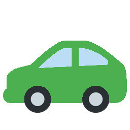
Mobilität
Möglichkeiten sind hier z.B. die Gründung von
Fahrgemeinschaften oder eine Fahrradtour als nächsten Ausflug zu planen statt mit dem Auto zu fahren.
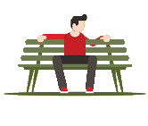
Infrastruktur
Möglichkeiten sind hier z.B. Barrierefreiheit anstoßen
oder Öffentliche Räume mitgestalten.
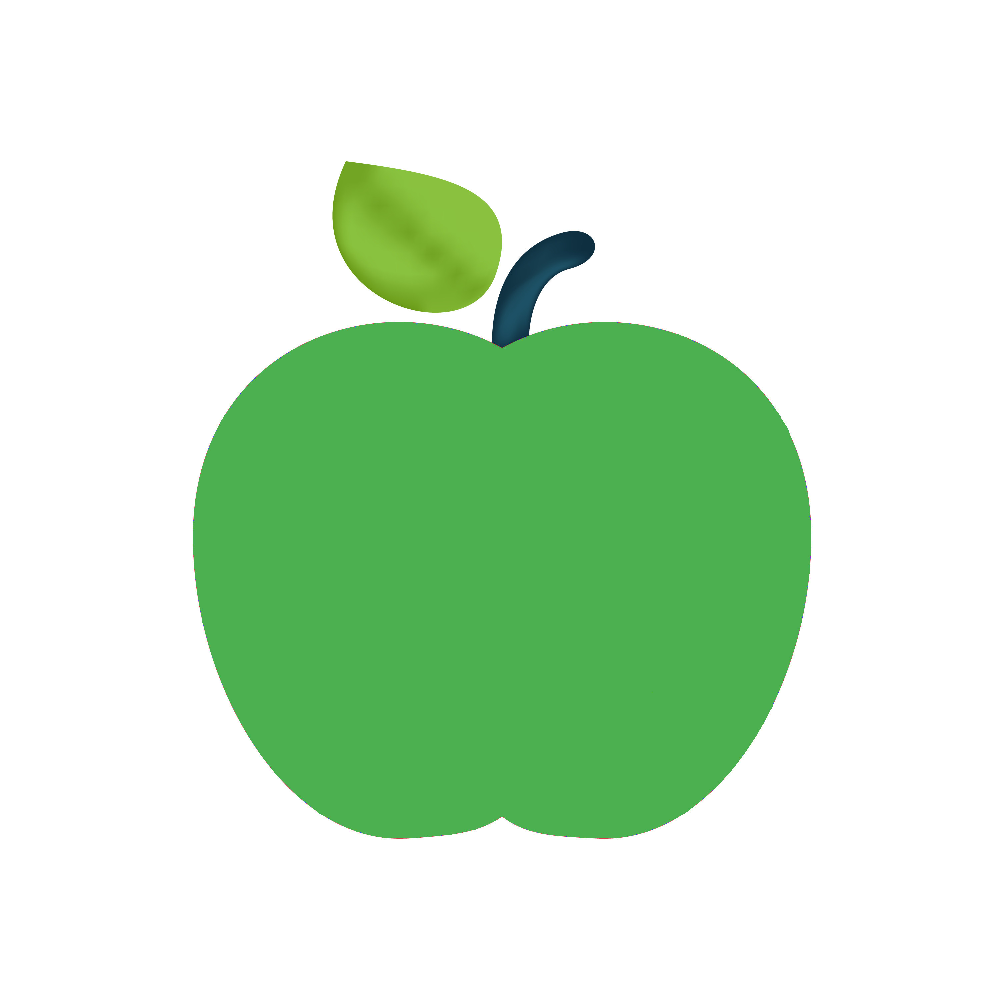
Ernährung
Möglichkeiten sind hier z.B. an einem Gemeinschaftsgarten
mitwirken oder regionale Lebensmittel kaufen und unterstützen.
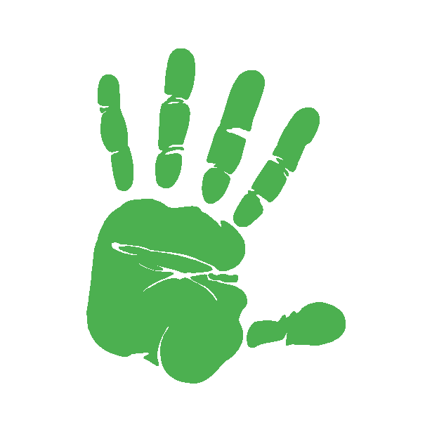
Dein eigener ökologischer Handabdruck
Schließ dich mit anderen Menschen zusammen und überlegt was ihr verändert wollt!
Nur gemeinsam können wir eine nachhaltige Entwicklung voranbringen.
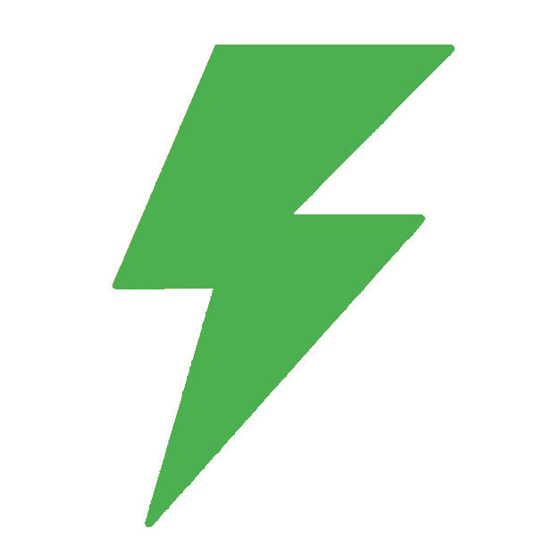
Energie
Möglichkeiten sind hier z.B. sich und andere über Ökostrom zu
informieren oder Photovoltaik bzw. andere Erneuerbare Energien zu unterstützen.
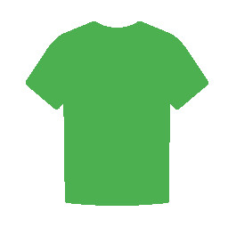
Rohstoffnutzung
Möglichkeiten sind hier z.B. Flohmärkte nutzen und an
"Reparier-Workshops" teilnehmen oder diese sogar veranstalten, um weniger wegzuwerfen.
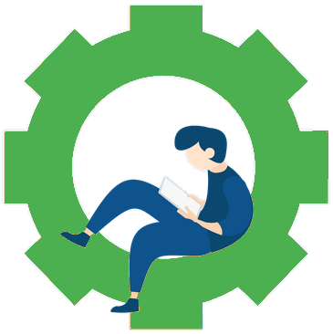
Arbeit und Soziales
Möglichkeiten sind hier z.B. sich für Faire
Arbeitsbedingungen einzusetzen oder in Vereinen zu organisieren.
Wichtig ist hier
jedoch:
Keiner verlangt von dir, dass du dein Leben total auf den Kopf stellst.
Bereits kleine Veränderungen, die ein jeder für sich erreichen kann, bilden die Grundlage für eine bessere
Zukunft.